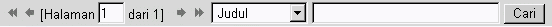

| Toolbar pencarian mengijinkan anda untuk melakukan pencarian pesan di dalam folder yang sekarang ini. 
Sebenarya menggunakan toolbar ini sangat mudah. Tanda Panah Kiri Ganda (
) akan melompat ke halaman pesan yang pertama di dalam folder yang sekarang. Lihat bagian Pilihan Tampilan untuk mengubah jumlah pesan yang sudah ditampilkan per halaman. Tanda Panah Kiri (
) akan melompati ke halaman pesan yang sebelumnya.
Kolom teks "1", memberitahukan anda halaman yang sekarang anda berada dari jumlah total halaman yang ada. Anda dapat mengubah halaman ini dengan melompat ke beberapa halaman pesan di dalam folder. Sebagai contoh, jika dikatakan "[2 dari 7 halaman]", anda dapat mengetik angka "5" dan mengganti angka "2", dan melompat ke halaman 5. Tanda Panah Kanan, dan Tanda Panah Kanan Ganda akan melakukan kebalikan dari Tanda Panah Kiri. Anda akan mencari pesan di dalam folder yang sekarang dengan mengetik di dalam pencarian query sederhana di dalam kolom teks di samping tombol "Cari", dan memilih kriteria yang ingin dicari Dari siapakah email tersebut dikirimkan, Kepada siapa anda mengirimkan email tersebut, Judul Pesan, Tanggal, File Lampiran, Semua Catatan Atas (Lengkap), Isi dari pesan tersebut, atau Semua yang di atas (Semua). Sekali anda sudah memilih semua kriteria pencarian anda, klik tombol "Cari", atau tekan tombol "Enter" pada keyboard anda. Toolbar ini digunakan untuk pencarian pesan sederhana dan melihat-lihat di dalam mailbox atau folder yang sekarang. Ada toolbar pencarian lanjutan untuk pencarian detil lebih lanjut. Silakan lihat bagian Pencarian Pesan Lanjutan untuk belajar mengetahui bagaimana melakukan pencarian query yang spesifik. |